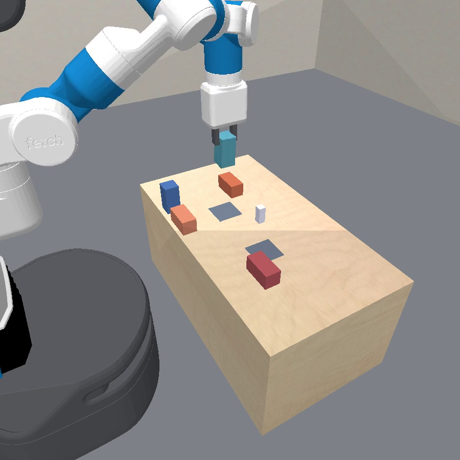
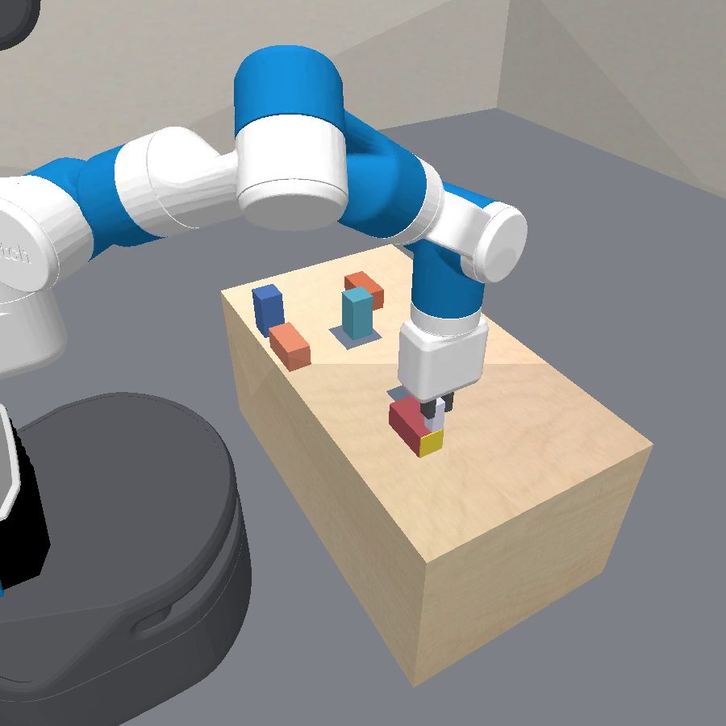
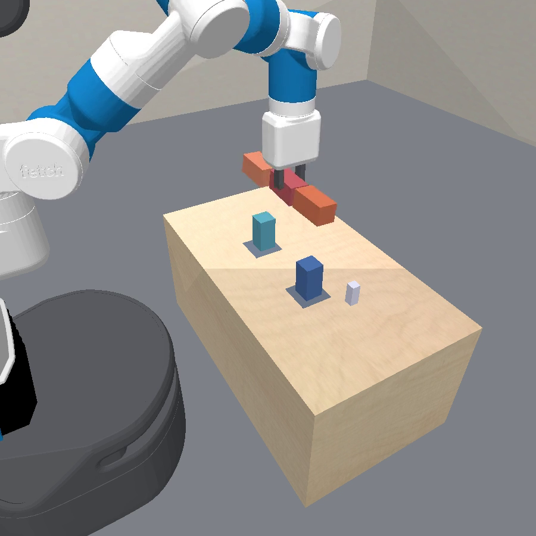
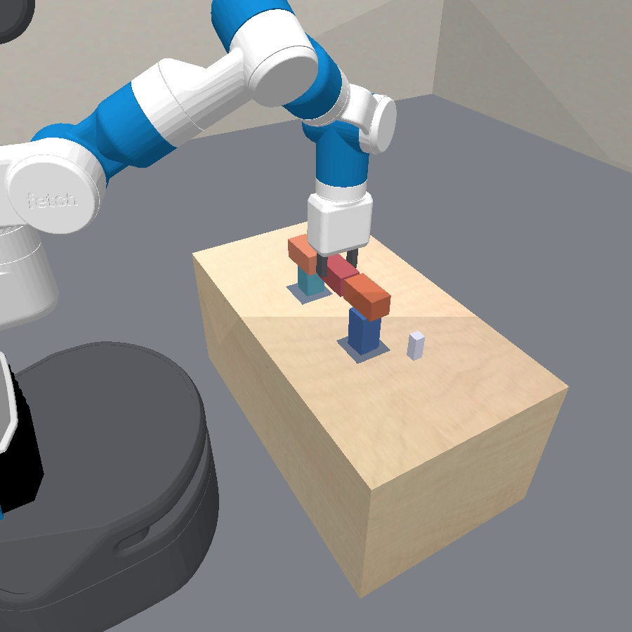
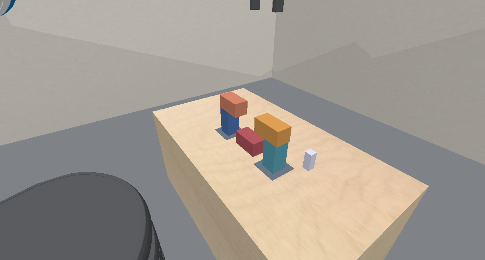
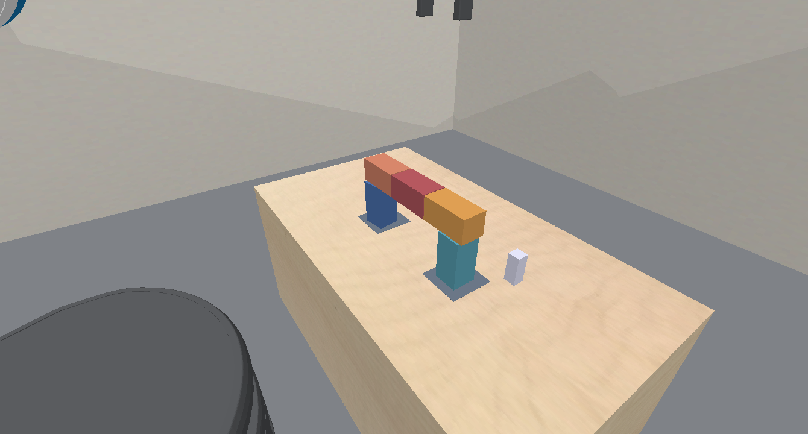

<!doctype html>
<html lang="en">
<head>
<meta charset="utf-8">
<title>Weekly Sync 2026-08-20: Bridge - Oracle Solved, Learning Made Honest</title>
<meta name="viewport" content="width=device-width, initial-scale=1.0">
<link rel="stylesheet" href="https://cdn.jsdelivr.net/npm/reveal.js@4.6.1/dist/reveal.css">
<link rel="stylesheet" href="https://cdn.jsdelivr.net/npm/reveal.js@4.6.1/dist/theme/white.css">
<link rel="stylesheet" href="https://cdn.jsdelivr.net/npm/reveal.js@4.6.1/plugin/highlight/monokai.css">
<style>
  .reveal { font-size: 28px; }
  .reveal h1 { font-size: 1.5em; }
  .reveal h2 { font-size: 1.1em; margin-bottom: 0.55em; }
  .reveal ul { font-size: 0.8em; line-height: 1.42; display: block; }
  .reveal ol { font-size: 0.8em; line-height: 1.42; display: block; }
  .reveal li { margin: 0.26em 0; }
  .reveal table { font-size: 0.62em; margin: 0 auto; }
  .reveal table th, .reveal table td { padding: 0.28em 0.6em; }
  .reveal .small { font-size: 0.58em; color: #555; }
  .reveal .good { color: #1a7a1a; }
  .reveal .bad { color: #a01515; }
  .reveal .hl { color: #b3541e; font-weight: 600; }
  .reveal .new { display: inline-block; background: #b3541e; color: #fff; font-size: 0.62em; font-weight: 700; padding: 0.05em 0.45em; border-radius: 0.4em; vertical-align: middle; }
  .reveal img { max-height: 520px; }
  .reveal pre { font-size: 0.52em; width: 96%; line-height: 1.3; box-shadow: none; border: 1px solid #ddd; }
  .reveal pre code { max-height: 520px; padding: 0.6em; }
  .reveal code { color: #2a5d8a; }
  .reveal p { font-size: 0.8em; }
  .reveal .commit { font-family: monospace; background: #eef3f8; color: #2a5d8a; padding: 0 0.3em; border-radius: 0.3em; font-size: 0.92em; }
  .reveal .commits { font-size: 0.5em; color: #666; text-align: left; border-top: 1px solid #ddd; margin-top: 0.7em; padding-top: 0.35em; line-height: 1.5; }
  .reveal .tile { flex: 1 1 0; min-width: 0; text-align: center; }
  .reveal .tile video { width: 100%; display: block; }
  .reveal .tile .cap { font-size: 0.5em; color: #444; line-height: 1.35; margin-top: 0.25em; text-align: left; }
</style>
</head>
<body>
<div class="reveal"><div class="slides">

<!-- ======================================================================
  Slides are Markdown inside the script block below, separated by a blank
  line, a line of three dashes, a blank line. "Note:" lines are speaker
  notes (press S). Commit chips annotate each slide with the week's
  commits (since the 08-13 sync). Videos live in assets/; the bridge
  mosaics come from make_bridge_mosaics.py, the boil clip is a freshly
  re-recorded oracle demo (the original learned-run videos predate this
  repo's logs).
======================================================================= -->

<section data-markdown data-separator="^\r?\n---\r?\n$" data-separator-notes="^Note:">
<script type="text/template">

# Predicator v3 sync, 2026-08-20<br>
<!-- .element: class="small" -->

Goal: a world-model-learning agent that learns from a few interactions and solves complex tasks.
<!-- .element: class="small" -->

<!-- This week: the novelty claim in one slide, where the four domains stand, the agent design as it exists now, and the bridge domain - oracle solved, learning relaunched on honest footing this morning. -->
<!-- .element: class="small" -->

Note: Last sync ended with fan solved 3/3 after the physics-command re-architecture. This week the center of gravity was bridge: the oracle-model agent now solves it 12/12, and the first learning runs taught us three integrity lessons that are now fixed and relaunched.

---

## The claim this project is building toward

An agent dropped into an unfamiliar, partially observable physical environment that <span class="hl">learns an executable world model from a handful of its own experiments</span>, then solves long-horizon manipulation tasks by planning with it.

- <b>World model = code over a physics engine</b>: residual process rules + physical parameters + latent state.
- <b>Abstraction and dynamics are learned together</b>: the agent invents the predicates that help its exploration, planning and execution.
- <b>Interactive agentic learning, not one-shot prompting</b>: multi-turn sandbox sessions with probes (`sim.fit` / `sim.residuals` / `sim.refine` / `sim.run`).
- (minor) exploration plans are scored by posterior-ensemble disagreement and truncated at the first step the current model cannot predict.

Note: The contrast class is our own earlier batch-prompting predicate-invention pipeline (one-shot LLM proposals, all context upfront, fixed sequence) and the prior papers in the repo lineage (VisualPredicator, ExoPredicator). The elevator version: the agent is a scientist with a physics engine for a notebook - it writes the model as code, fits it, argues with it, and only then plans with it. Each domain contributes one mechanism class: exogenous processes (boil), parameter mismatch (domino), force fields (fan), state-dependent constraint creation (bridge).

---

## Where the domains stand

<div style="display: flex; gap: 0.5em; align-items: flex-start;">
<div class="tile"><video src="assets/boil_oracle_demo.mp4" controls autoplay loop muted playsinline></video>
<div class="cap"><b>boil</b> - heat is hidden; only a bubbling ramp is observable; fill / boil / spill learned as residual rules. </div></div>
<div class="tile"><video src="assets/domino_al_test_seed0.mp4" controls autoplay loop muted playsinline></video>
<div class="cap"><b>domino turn</b> - initial friction is higher than the belief default. Agent sysIDs friction from its own topples.</div></div>
<div class="tile"><video src="assets/fan_al_test_seed1.mp4" controls autoplay loop muted playsinline></video>
<div class="cap"><b>fan</b> - hidden wind, learned as a force rule through the engine + invented alignment predicates. <span class="good">3/3 seeds solve the held-out test</span>.</div></div>
<div class="tile"><video src="assets/bridge_oracle_hybrid_seed0.mp4" controls autoplay loop muted playsinline></video>
<div class="cap"><b>bridge</b> - glue wetness is visible, but cure and weld are hidden (a weld shows only through co-motion). <span class="good">oracle_hybrid_sim 12/12</span> (GT model given, agent plans). <span class="hl">Learning: in progress</span> - relaunched today.</div></div>
</div>

One mechanism class per domain: exogenous processes &rarr; parameter mismatch &rarr; force fields &rarr; constraint creation.
<!-- .element: class="small" -->

Note: Boil is the project's opening result and predates this repo's log retention - the clip is the GT demonstrator re-recorded this morning (solves 1/1, 9-option plan), shown for the task, not as a learned-run artifact. Domino numbers are the al_margin arm's 07-30 sweep; fan numbers are the 08-13 deck's, unchanged since. Bridge is this week's story - two slides at the end.

---

## Our agent, overview

```text
for cycle in 1..10:            # early-stop when train tasks are solved
  EXPLORE   agent writes 2 experiment plans on train tasks
  EXECUTE   each plan runs in the real env  ->  new trajectories
  LEARN     one synthesis session rewrites simulator.py + predicates.py;
            the harness fits declared params
  TEST      one solve session per held-out task;
```

- Three session kinds - <b>explore / learn / solve</b> - share one persistent sandbox.
- Persistent artifacts: `simulator.py` (rules + param specs + DECISION RECORD, auto-versioned), `predicates.py`, `journal.md`.
- Early stopping is honest: a cycle counts as converged only if every train task succeeded and the mental model also solved it.

<!-- <div class="commits">This week: <span class="commit">fe42d0b0</span> single-source the solve/explore/synthesis prompt surfaces &middot; <span class="commit">59dea40a</span> system prompt states only the active phase's contract &middot; <span class="commit">2626f26c</span> explore sessions tagged as their own phase &middot; <span class="commit">28f4e366</span> one line per paragraph across all phase prompts</div> -->

Note: Arm = agent_po_predicate_invention_al: partially_observable, no demos (max_initial_demos 0), 1 train + 1 held-out test task, 2 explore requests per cycle, up to 10 cycles. The prompt work this week was consolidation: the three phase prompts had drifted apart; they are now generated from one source, and a session only ever sees the contract for the phase it is in - which measurably reduced the agent confusing explore deliverables with solve deliverables.

---

## Phase 1: explore - the agent proposes an experiment

- Input: one train task (goal in natural language), the current belief model (base sim + learned rules at fitted params), invented predicates, and what the other request this cycle already plans to try.
- Code agent output: an experiment plan.
- The harness then backtracks over continuous params against the belief model and <span class="hl">truncates the plan at the deepest step the model cannot predict</span> - the plan probes the model's own frontier.
- Info-seeking: among feasible parameter samples, execute the one that most splits a 6-member posterior ensemble - the most informative experiment, not the first feasible one.
- The rollout in the real env becomes training data, stamped with a "did my mental model think this would work" verdict.

<!-- <div class="commits">This week: <span class="commit">2626f26c</span> explore is its own phase (own prompt, own session logs) &middot; <span class="commit">f2e8191c</span> explore queries frame the task as information gathering, not solving &middot; <span class="commit">0a53d894</span> bridge explore episodes get 1000 interaction steps (cure experiments need long Waits)</div> -->

Note: The framing commit matters more than it looks: explore sessions used to receive solve-shaped prompts and would grind toward a solve capture they could not produce; now the contract is "design the experiment that teaches the model the most." The 1000-step budget came out of the bridge post-mortem two slides ahead - a cure experiment needs a place-glue-wait cycle that did not fit in 500 steps.

---

## Phase 2: learn - synthesis rewrites the world model

- Input: the full trajectory history with provenance tags (which simulator/predicates version produced each plan), and the base sim's actual source.
- Deliverable, written as code in the sandbox:
  - `simulator.py`: `RESIDUAL_RULES` (recurrent form with a latent channel under PO), `PARAM_SPECS`, optional `PHYSICAL_PARAMS` (base-physics sysID).
  - `predicates.py`.
<!-- - Prescribed gate: fast loop `sim.fit` + `sim.residuals` per edit; then the slow gate - `sim.refine(require_goal=True)` and a continuous `sim.run` of the refined plan must <span class="hl">both</span> pass. -->
- The harness then fits the declared params, compiles base sim + rules into the planner's option model, and rebuilds the posterior ensemble for the next explore phase.

<!-- <div class="commits">This week: <span class="commit">363aa1fc</span> agent SDK model updated to claude-opus-5</div> -->

Note: The DECISION RECORD convention: simulator.py opens with the agent's own running rationale, and the next cycle's prompt tells it to re-read and re-decide the architecture, not just tune - that is what let fan seeds abandon a wrong wind model instead of polishing it. There are no learned PDDL operators in this arm: the "operator model" is the combined simulator, and invented predicates supply the subgoals that make the sketch search directed.

---

## Phase 3: solve - only validated plans touch the world

- Evaluation is the same agent on the held-out task with its learned model: up to 5 attempts, each a fresh conversation with a 45 min wall clock; knowledge crosses attempts only through the curated journal.
<!-- - Hard rule: <span class="hl">nothing unvalidated executes</span> - only a plan captured through the validation tool on the true initial state is run. -->
- Only validated plans are finally submitted: 5 seeded rollouts (10 after a flaky rejection), and the capture must survive <span class="hl">&plusmn;1 posterior-&sigma;</span> perturbation of the identified physical params - plans that only work at the point estimate are rejected.
- During execution, per-step subgoal annotations are checked against reality; divergence triggers up to 2 suffix replans.
- Test-phase journal entries are rolled back afterwards, so each cycle's evaluation is independent.

<!-- <div class="commits">This week: <span class="commit">4ab30e45</span> reproducible, agent-steerable plan validation &middot; <span class="commit">8a412b03</span> validation gate raised to 5 rollouts, 10 after a flaky one</div> -->

Note: The validation work responds to a real bridge failure mode: single-rollout validation passed plans that survived one physics roll of the dice. Making the gate seeded and multi-rollout also made agent-reported validation results reproducible by us after the fact - the same seeds replay to the same verdict.

---

## This week's domain: bridge

<div style="display: flex; gap: 0.4em; justify-content: center;">




</div>

- Task: build an n-bridge - stand legs at two sites, glue three span blocks into a row, and seat the bonded row across the leg tops.
- Wetness is observable (wet faces render; `glue_*` flags in state) - what must be learned is the wetting law: the flag flips only after a dab near the face plus sustained dwell.
- Truly hidden: the cure process (a wet, aligned, resting, unheld joint cures after sustained contact) and the resulting rigid bond ("weld") - neither ever appears as a feature; a weld is <span class="hl">observable only through co-motion</span>.
- The latent is not a parameter or a force - it is a process that creates constraints, and an unglued structure is geometrically identical to a welded one until one moves it.

<div class="commits">This week (GT mechanics hardening): <span class="commit">148f1b6d</span> sustained-dwell glue wetting; observable block half extents &middot; <span class="commit">7a8ad5d4</span> recalibrate cure gates so welds can latch &middot; <span class="commit">7013e41d</span> kill weld creep + systematic place landing bias &middot; <span class="commit">d683477e</span> tack wet joints until they weld &middot; <span class="commit">cb2afb98</span> stop glue/cure state leaking across env instances</div>

Note: The physical laws, for questions: dab within 2 cm of a glue face, wetness ramps over 3 steps; a wet joint in aligned resting contact, unheld, cures after 25 consecutive steps and becomes a PyBullet fixed constraint. Observability split, precisely: the glue_* wet flags are in the observed state in both modes (wet faces even render); the cure_* counters and attached_* slots ride the privileged channel under PO, so cure progress and welds have no observable feature at all. The hardening commits were forced by the oracle runs themselves - weld creep (welded rows slowly drifting apart), cure gates too tight to ever latch under real contact noise, and glue state bleeding between env resets in the same process.

---

## Bridge: the oracle_hybrid_sim agent solves it - 12/12

<video src="assets/bridge_oracle_hybrid_1x3.mp4" controls autoplay loop muted playsinline style="max-height: 400px; width: 100%; display: block; margin: 0 auto 0.3em;"></video>

- The agent is handed the GT simulator program and true physical params - as if learning had already succeeded - and still must sketch, refine, validate, and execute with replans.
- Two 6-seed replications, both <span class="good">6/6 solved</span>.
- Earlier in the week the same seeds sat at 0% - <span class="hl">the skill/GT sim hardening below is what closed it</span>.

<div class="commits">This week (skills + robustness): <span class="commit">eaf26181</span> grasp detection requires a pinch, not a touch &middot; <span class="commit">56e15b7b</span>/<span class="commit">386a5d70</span> pick verifies the lift &middot; <span class="commit">4a13e46a</span> guarded settle-to-contact release &middot; <span class="commit">89101327</span> escalated goal-IK on goal collisions &middot; <span class="commit">ecaae741</span> collision-aware goal-config selection across IK branches &middot; <span class="commit">d21a4ae7</span> robustify carried-assembly planning</div>

Note: This arm is the upper bound that isolates learning as the remaining gap: planning, refinement, skills, and the env are all certified working. The two replications are the same configuration (the second pins the already-default model), so read it as 12 independent samples of one arm. The multi-attempt seeds failed on placement poses in clutter, then converged via the journal; no seed needed more than 3 of its 5 attempts.

---

## Bridge: what the first learning runs exposed

<video src="assets/bridge_explore_1x3.mp4" controls autoplay loop muted playsinline style="max-height: 360px; width: 100%; display: block; margin: 0 auto 0.3em;"></video>

Three seeds of the learning arm ran 08-19 (footage above: cycle-0 exploration). <span class="bad">No seed learned the cure law</span> - and the post-mortem found the deck was stacked, in both directions:

1. <span class="bad">The agent read hidden ground truth</span>: `State.privileged` (cure counters).
2. <span class="bad">The goal itself was privileged</span>: two `Attached` goal atoms read the hidden weld state, which a belief model over observable features can never write - so the honest early-stop was unreachable by construction.
3. <span class="bad">Latent-targeted Waits never terminated</span>: they burned whole episodes, and the step budget then killed seed 0's well-designed cure experiment mid-Wait.

Note: Finding 1 is genuinely instructive: given any channel that correlates with the hidden state, an agent optimizing for model accuracy will find it - seed 1 read cure counters straight out of the privileged channel and reported the threshold as "learned". The audit that caught it was diffing what the agent claimed against what its recorded observations could support. Finding 2 is the deep one: we had defined success partly in terms of the thing being hidden.

---

<!-- ## Bridge, step 3: fixes landed, demonstrator re-verified, relaunched

<div style="display: flex; gap: 0.6em; align-items: center; justify-content: center;">


</div>
<p class="small" style="text-align: center;">the settle certificate: free physics after the episode - the unglued row collapses (left), the welded one stands (right)</p>

- <b>Leaks closed</b>: sandbox guard blocks `privileged` / `_ctx` / dynamics-flag access; the norm is stated in the agent's instructions; reference prose scrubbed.
- <b>Goal fully observable</b>: `Attached` atoms removed (gluing is physically implied); a <span class="hl">settle certificate</span> re-checks the goal after free physics, so a dry bridge that transiently poses correctly cannot score.
- <b>Waits bounded</b>: `wait_option_max_steps` backstop now covers targeted Waits too.
- Demonstrator unaffected, verified empirically: 3-seed sweep on the new code - <span class="good">3/3 SOLVED, zero settle rejections</span>, ~3 s planning.
- <span class="good">Relaunched this morning</span>: 3 seeds, currently in cycle-0 exploration.

<div class="commits">This week: <span class="commit">c575f19e</span> close the hidden-ground-truth leaks the bridge runs exploited &middot; <span class="commit">263a728d</span> observable-only goal + settle certificate; targeted-Wait backstop &middot; <span class="commit">123dc4af</span> oracle e2e also certifies via the settle check &middot; <span class="commit">16404b3a</span> bridge agent arm plans demonstrator sim-free, one solve attempt</div>

Note: The settle certificate closes a subtle exploit found while removing the goal atoms: the grasp constraint is released after the physics substeps, so the first post-release observation shows an unheld dry span at its exact placed pose - goal geometry holds for one frame. Sixty free substeps later a dry row is on the floor; a welded one is not. The demonstrator never needed the Attached goal atoms anyway - the process preconditions force gluing - which is exactly why removing them is safe.
 -->
<!-- ---

## Also this week: parallel tracks

- <b>Real robot (Franka domino sysID)</b>: episodes now run open-loop with continuous SVO recording; the friction fit is scored against a markerless pose track, matched to the twin once per episode; recording opens right in front of the push. PRs #134-#139.
- <b>sysID scoring robustness</b>: score the track once per episode, not per segment; a segment with no cascade scores nothing, not penalties; onset ties no longer delete both dominoes.
- <b>Infra</b>: learned-artifact pickle retry after a GC pass (PR #142); Slurm jobs independent of the submitting shell + configurable partition; mypy fully clean; CI test-duration map regenerated.

<div class="commits">Real robot: <span class="commit">8b6adcf2</span> open-loop execution + markerless continuous perception (plan) &middot; <span class="commit">421ffcbf</span> SVO takes per episode &middot; <span class="commit">bbbc291a</span>/<span class="commit">1d809f36</span> score friction fit against the pose track &middot; <span class="commit">b802ae37</span> match track to twin once per episode &middot; <span class="commit">cdaf1b9a</span> open the take in front of the push &middot; sysID: <span class="commit">f500f8ad</span> &middot; <span class="commit">fbc96597</span> &middot; <span class="commit">bee9a3aa</span> &middot; <span class="commit">6b957f75</span> &middot; infra: <span class="commit">eac8665e</span> &middot; <span class="commit">a0daec43</span> &middot; <span class="commit">0583ec95</span> &middot; <span class="commit">b23b42cf</span> &middot; <span class="commit">28243937</span></div>

Note: The real-robot thread is the domino friction story moving onto hardware: same sysID machinery, but perception is now markerless (no fiducials on the dominoes) and execution is open-loop so the recording is the ground truth. The sysID scoring fixes all came from that pipeline's first full runs.

--- -->

## Next

- <b>Read the relaunched bridge runs</b>: with leaks closed, goal observable, and Waits bounded - does the agent now design the place-glue-wait-nudge experiment and learn the cure law from data?
- If pure exploration cannot surface the mechanism in budget: the demo-assisted variant is ready.
- Real-robot friction fit toward closed-loop learning on hardware.
- Start shaping the paper.

<!-- Note: The bridge relaunch is the week's real experiment: everything the agent could previously shortcut is now closed, so whatever it learns next, it will have learned honestly. Seed 0's killed cycle-1 experiment from the old runs is the encouraging sign - the agent already designs the right experiment; it needed the budget and the honest environment to finish it. -->

</script>
</section>

</div></div>
<script src="https://cdn.jsdelivr.net/npm/reveal.js@4.6.1/dist/reveal.js"></script>
<script src="https://cdn.jsdelivr.net/npm/reveal.js@4.6.1/plugin/markdown/markdown.js"></script>
<script src="https://cdn.jsdelivr.net/npm/reveal.js@4.6.1/plugin/highlight/highlight.js"></script>
<script src="https://cdn.jsdelivr.net/npm/reveal.js@4.6.1/plugin/notes/notes.js"></script>
<script>
  Reveal.initialize({
    hash: true,
    slideNumber: true,
    width: 1280,
    height: 720,
    autoPlayMedia: true,
    plugins: [RevealMarkdown, RevealHighlight, RevealNotes],
  });
</script>
</body>
</html>
